|
||||||
| 14 |
Using
Learning Progress Richard Lesh, Susan
J. Lamon, |
|||||
|
INTRODUCTION This chapter considers the following questions: Which decisions are top priorities for educators to address? Which kinds of information do they need to make informed decisions? Which way should that information be reported? Which types of information and data sources should be summarized by reports? And how can such reports be computer based, interactive, multidimensional, decision-specific, and easy to understand? The preceding questions reflect a shift in emphasis away from testing, toward informed educational decision-making. The goals are: (i) to intrude as little as possible on instruction, either by using information from instructional activities or by increases in the instructional value of assessment-focused activities; (ii) to provide high-fidelity portraits or multidimensional descriptions of students, teachers, or programs that are as rich as possible; (iii) to reflect information from as many sources as possible in which students naturally exhibit their achievements and abilities; (iv) to facilitate well-informed decision making while avoiding value judgments that artificially and needlessly limit decision-making responsibilities of relevant professionals. To achieve the preceding range of goals, recent policy statements from a number of relevant professional and governmental organizations have made significant progress to clarify: (i) the nature of the most important broader, deeper and higher-order objectives that will be needed to provide adequate mathematical foundations for knowledge in the 21st century, and (ii) the nature of the most important new types of tests and items that will be needed to assess priority level understandings and processes. However, precisely because significant progress has been made at the level of individual problems and isolated objectives we believe it is timely to discuss necessary next steps and that these next steps may need to expand to include the following range of issues.
For continued progress to be made it is important for mathematics educators to deal with issues beyond the level of individual items and objectives. New statements of objectives must go beyond simple, unweighted lists of definitions, facts, and skills that students are imagined to master one at a time. It is not enough to simply replace multiple choice items with problems and scoring procedures that still allow only a single type and level of correct answer. And when conceptually rich and instructionally relevant assessment information is gathered using portfolios, cooperative group projects, or teacher classroom observations, the results should not be collapsed into a single numerical score or left in an uninterpreted form that fails to meet the needs of educational decision-makers. One way to optimize the responsible use of assessment results is to generate reports that highlight trends and other patterns. Ideally, such reports should filter, simplify, organize, and interpret information in a form relevant to local conditions and to particular decision-making issues. When reports display information from a variety of sources, they should also help their users to make more valid interpretive inferences and adopt more socially responsible courses of action. Addressing these goals will shift attention beyond traditional bottom-up approaches to assessment (objectives to items to tests to reports). This chapter will take a top-down approach which begins by trying to identify the types of reports and information that educators need to optimize the mathematical experience of every student. THREE UNDERLYING ASSUMPTIONS The recommendations that will be made in this chapter are based on the following three assumptions. First, for most of the decisions that are priorities for educators to address, it is inappropriate and simplistic to characterize students (or teachers, or programs) using only a single number. Second, regardless of whether one is interested in evaluating automobiles, or students, or teachers, or programs, it is inappropriate to attach labels or scores without specifying purposes, assumptions, and conditions. For example, to say that a given automobile is "good" clearly begs the question: Good for what purpose? Good under what conditions? Questions about validity have as much to do with the way assessment information is reported as they do with the nature of the problems and objectives that were used to generate the data. Moreover, the validity of reports is especially relevant to curriculum reform, because the validity of an assessment program depends on the decisions it is intended to inform. Tests and reports that may once have been valid, reliable, or economical may become invalid, counterproductive, and costly when goals and conditions shift. For example:
In the past, when high-stakes tests used exceedingly narrow conceptions of talent the goal was to screen a small-but-adequate number of students for admissions into a few elite programs. But today, even at selective colleges, alarming numbers of students are admitted who must be assigned to remedial courses; and, far too few students are pursuing careers related to mathematics or the sciences that preserve our country's economic prosperity. Therefore attention has shifted toward supporting more diverse conceptions of talent and toward maximizing opportunities for all students. The third assumption underlying this chapter is that the practice of labeling students with only a single number (which is presumed to be condition free, invariant across all contexts, unmodifiable through experience, and equally applicable for all purposes) is simply out of date! It is a throwback; to the days when primitive computers led to conditions were very different than they are today. For example:
This chapter will explore assessment possibilities associated with the fact that modern computer capabilities are able to produce reports that are: (i) graphics based to clarify trends and other patterns beneath the surface of things, (ii) inter-active to respond to on-site user inquiries, (iii) intelligent to filter, simplify, organize, and interpret information in a form that is especially relevant to local conditions and to particular decision?making issues, and (iv) multi-dimensional to integrate information from a variety of data sources, and to produce vector?valued interpretations (or n?dimensional graphics?based interpretations for situations that do not lend themselves to simple numeric quantification). VISUALIZATION TECHNOLOGY Scientific visualization refers to the use of computer capabilities to create and manipulate sophisticated graphic renderings of large, complex data sets. Techniques such as contour and vector mapping & three-dimensional plotting, and color raster imaging (a process that assigns a color to each data point) are used to minimize the mental/visual processing required to draw conclusions about complex multivariable data in mathematics, science and engineering. Computer graphics can clarify, relationships that are obscure or impossible to grasp in more conventional representations. Many colleges and universities have visualization laboratories in which students and researchers can create, manipulate, and animate three dimensional images. Fields as diverse as bioengineering, foreign languages, medicine, and psychology are finding increased uses for these techniques. And because of its growing use for educational purposes, the emphasis in development of visualization techniques is shifting from general purpose tools to discipline-specific software (Publix Information, 1991). We argue in this chapter that visualization technology can drastically change the nature of instruction, assessment, and reporting, using visualization tools now available in the public domain for use on personal computers. We expect the I proliferation of visualization tools from special visualization laboratories at universities into elementary schools, and we anticipate profound changes in the mathematics curriculum as visualization technology brings hands-on, experiential learning into the classroom. Likewise, as manipulatable graphic representations become available to most classroom teachers, changes will occur in the reporting of student and class assessment data. (In the appendix, we describe some simple maze image processing techniques and show the progressive transformation of one image into another.) As new visualization technology enters the classroom, it could be used to aggregate, display, and manipulate complex assessment data to increase the power of reports. The next section of this chapter describes one type of report that exploits this tool and achieves some ambitious objectives for handling complex assessment data. Later sections will then give additional details about how these reports were designed and about how several new types of data sources can be taken into account, such as those based on students' project portfolios, on teachers' classroom observations, or on other authentic performances of students in realistic situations (Burstall, 1986; de Lange, 1987). LEARNING PROGRESS MAPS Figure 1 shows two views of a type of interactive graphics-based report that is being developed in a current NSF-funded project investigating the nature of students' understandings in middle school mathematics (Post, Behr, Lesh, and Harel, 1990). Although the pictures shown here cannot be enlarged or colored to show details, their general character is apparent. We refer to such reports as "learning progress maps" because they resemble three-dimensional topographical maps in historical atlases, where straightforward graphic techniques are used to illustrate periods during the rise and fall of various empires. Some regions are conquered and stable; others are occupied but unstable; and still others are terra incognita. 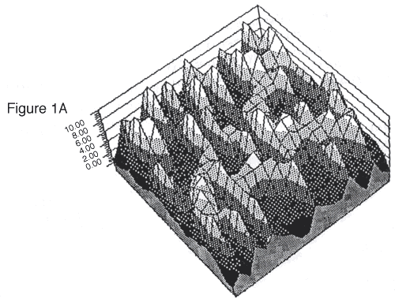 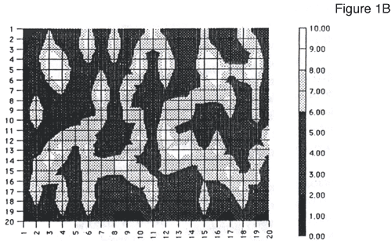 Learning progress maps can provide easy-to-interpret models of potential student knowledge (Kieren, 1988; Lesh and Kelly, 1990). They can show the conceptual terrain that all students are encouraged to explore in a targeted curriculum; and, they can show n-dimensional profiles of development for individual students in various conceptual regions. A map, in its initial state, is much like a plain (or plane) in which we expect students to "grow" mountains. The growth of a mountain is a physical analogy for the student's internal construction of the major models in the mathematics curriculum. (See discussion of models in Chapter 2.) An individual student's progress in each conceptual region is recorded by altering the map, thus creating a graphic representation of his or her development. NEIGHBORHOODS As shown in Figure 2, the locations of the anticipated mountains are indicated as neighborhoods on the plane. Each neighborhood contains a conceptual field or a collection of activities whose underlying ideas, concepts, models, procedures, and/or representations are narrowly interconnected (Vergnaud, 1983). Within each neighborhood, the locations of activities depend on the structural complexity of the conceptual systems underlying the activities. The activities at the boundary of the neighborhood are based on elementary ideas needed for understanding the field. The activities near the center are model-eliciting activities (See Chapter 2); these are conceptually demanding activities related to holistic, well-integrated systems of knowledge (elements, relations, and operations). 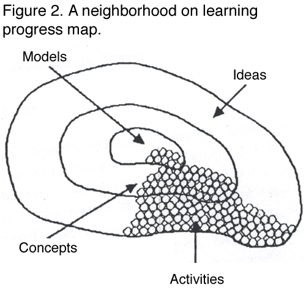 The outer region of a neighborhood corresponds to a collection of instructional/assessment situations in which students deal with elementary ideas that are critical to the development of a model. For example, for proportional reasoning concepts, the outer region of the neighborhood would contain activities that help students do some of the conceptual reorganizing necessary to understand proportions. Critical understandings include (i) distinguishing absolute comparisons and relative comparisons and (ii) recognizing the differences between ratios and fractions. (See Chapter 13 for a discussion of ratio and proportion.) Although activities to facilitate these understandings do not evoke complete models, they provide students with entry points to the model-building process. These activities are analogous to foothills that must be crossed before one can climb the mountain. The middle section of the neighborhood corresponds to activities that help students integrate ideas and form concepts. For example, in the case of ratio and proportion, the concept of an equivalence class involves the integration of two primitive ideas: (i) the co variation of two terms within the same measure space, and (ii) the relation that yields an invariant function between terms of two measure spaces. Thus, the concept of an equivalence class does not constitute a model but is more than an elementary idea; it is an example of an intermediate conceptual entity. The center of the neighborhood contains activities involving mathematical models that underlie the most important cognitive objectives students are expected to construct in the targeted mathematics curriculum. During the past decade, some of the most productive areas of mathematics education research have focused on cognitive analyses. This research has identified many important conceptual models that children use to make mathematical judgments in content areas such as whole number arithmetic (Carpenter, Moser, and Romberg, 1982; Fuson, 1988; Steffe,1988); rational numbers and proportional reasoning (see, for example, Hiebert and Behr, 1988); and geometry and algebra (Confrey, 1990; Thompson, 1990; Tall, 1992; Kaput,1989; Wagner and Kieren,1989) . Using this research as a point of departure, our own research suggests that, at a given grade level (or within a given course), few curricula deal with more than 10 to 15 distinct foundation-level models (Post, 1987). Yet these models are seldom clearly highlighted in mathematics instruction and assessment. Furthermore, even though a great deal of research has investigated development within these conceptual fields, little is known about developmental relationships among these areas. Therefore, we are designing maps to help educators sort out the most important foundation-level models from lower-order objectives and to emphasize interrelationships among conceptual models. To determine the relative locations of a collection of activities within a neighborhood, it is necessary to conduct thorough cognitive analyses of the underlying cognitive systems that students use to interpret learning and problem-solving situations (Greeno, 1988b). For example, within the strand of whole number arithmetic, Steffe (1988) and others have shown that conceptual models based on simple counting units provide cognitive foundations for higher-level models based on composite units, or other units of units. Lamon (1992) has shown how conceptual models based on composite units provide cognitive foundations for higher-level systems in which the units consist of (i) relations among lower-level units (such ratios), (ii) operations with lower-level units (such as functions), or (ii transformations among lower-level unit6 (such as operators). Across a variety of mathematical strands, one important way that lower-level systems develop into higher-level systems resembles the way written language proceeds from letters to words to phrases to sentences paragraphs. Lower-level models based on simple units develop into higher level models based on unit-of-units, or relations among units, or operation on units. The power and complexity of student activities increase as units gradually evolve beyond objects that can be perceived by direct experience and toward objects based on patterns and regularities beneath the surface of things (Howson and Wilson, 1986). Progress from the boundary of a neighborhood toward the center is similar to Piaget's notion of progress from concrete operational structure to formal operational structure (Piaget and Beth,1966). But, Piaget focused on concepts that develop naturally, and on periods in which global conceptual reorganizations occur (such as at the transition periods between the periods of concrete and formal operational reasoning); whereas mathematics educators have focused on (i) concepts that seldom develop beyond primitive levels unless artificial (mathematically rich) learning environments are provided and (ii) detailed transitional stages between periods of global reorganization. Therefore, our maps focus on those dimensions of conceptual development which are needed to achieve a deep understanding of an elementary topic area (Lesh, 1990). Combining conceptual systems Different neighborhoods contain activities related to different conceptual systems; and a key criterion for conceptual systems to be different is that they are based on different primitive objects. For example at the level of high school mathematics, the Mathematical Sciences Education Board identifies strands based on the following primitive types of objects: (i) patterns, (ii) quantities, (iii) shapes, (iv) uncertainties, (v) dimensions, and (vi) changes (Steen, 1990). Or at the middle school level models which tend to be emphasized are based on primitive objects such as (i) fractions, (ii) ratios, (iii) rates, (iv) percents, (v) proportions, (vi) probabilities, (vii) rules (or fractions), or (viii) coordinates (see, for example, Hiebert and Behr, 1988; Post, 1987; Steen 1986). At the primary school level, models that are emphasized involve primitive objects such as (i) counts, (ii) composite units, (iii) measures, (iv) fractions, (v) locations, and (vi) shapes (see, for example, Steffe, Cobb, and von Glasersfeld, 1988). In some ways, the preceding strands and themes are similar to the columns in scope and sequence charts for textbooks or to the content categories in content-by-process matrices for standardized tests. But, whereas traditional types of charts and matrices have tended to fragment and compartmentalize the curriculum, recent curriculum guides have focused unifying themes and on basic patterns and regularities that cross a variety of conceptual models (Lesh, 1990). Because our "mountains" emphasize to the most important conceptual models and reasoning patterns that students are encouraged to construct at a given grade level, the location and names of the neighborhoods vary from one curriculum to another, as well as from one grade level another within a given curriculum; and, progress through a given K-12 curriculum can be thought of as a cluster of tectonic plates that move, rise, sink, expand, and contract from one grade level to another. For example, in a given sixth-grade curriculum, some of the most important conceptual neighborhoods are based on systems of fractions, ratios, rates, or quotients, yet at the seventh-grade level, all of these systems may be integrated into a single powerful and inclusive model based on rational numbers or proportional reasoning (Lesh, Post, and Behr, 1988). Intersecting neighborhoods on the maps indicate that the underlying conceptual systems are structurally overlapping. That is, spatial closeness indicates conceptual relatedness. Of course, it is not possible to portray all of the logical relationships that exist among systems, but because our maps use more than one or two dimensions, they can capture more of the relatedness of mathematical ideas than the organizational schemes in most scope and sequence charts in textbooks or most content-by-process matrices for tests. Comparisons with expert knowledge Learning progress maps are not intended to portray a single "true" picture of expert knowledge. In fact, we reject the notion that there exists a single, static, and correct organization. For example, in mathematics, it is known that experts tend to define, organize, and weight their knowledge in different ways depending on their own personal goals and experiences, and for a given individual-expert or novice-the best way continually evolves as contexts, conditions, and purposes change. Real human cognition tends to be far more situated, dynamic, and purpose-oriented than we can capture in any single map (Greeno, 1988a; Mestre, 1987). Therefore, our maps are considerably different than the usual semantic networks that cognitive psychologists have tended to use to portray states of knowledge. Another way that our maps are different than descriptions about the state of knowledge of an expert is that the expert's quest for economy parsimony, and power eventually lead to a well-compiled form of knowledge in which a number of conceptual nuances that are important at lower levels of development become invisible-unless a large amount of psychological unpacking is provoked. For instance, in the case of rational numbers and proportional reasoning, a number of basic constructs take on distinct personalities, depending on whether students encounter them in the form of fractions, ratios, rates, indicated quotients, decimals, or percents (Kieren, 1988). Therefore, for purposes of instruction, it is often important for students to explore similarities and differences among these subconstructs even though mathematicians might treat them all as special cases of a single system. Local school systems or individual teachers should be able to modify the default values that we assign to the weights, locations, and attributes of various neighborhoods or mountains. Even if these modifications override some of the wisdom that we believe we built into the organization of our maps, local educators should be able to modify parameters to reflect the goals, objectives, and instructional sequences in their own local curriculum. Capabilities that are granted to local teachers should also be given to those who must make decisions based on the information teachers enter into the database or model. For example, if a school or a teacher insists on modifying default values in away that emphasizes lower-order facts and skills (perhaps for the purpose of addressing state-level pressures for accountability), then funding agencies or college admissions officers may choose to reset the original default values to emphasize deeper and higher-order understandings, or other preferences. CREATING N-DIMENSIONAL STUDENT PROFILES Student profiles are created by modifying the learning progress map through a variety of image processing techniques (similar to those used in the example involving the Mandelbrot Set in the appendix). In addition to obtaining an overall impression of a student's development within a particular neighborhood and across the curriculum, the map should provide information on other relevant questions. For example, while working on a particular activity, did the student make important connections to other topics not located in the same neighborhood? Is the student able to represent a situation using only one mode of representation, or more? Where (and when) has the student's most recent activity occurred? Does the student understand a concept embedded in only one context or in many different contexts? Visual dimensions of student variables Using learning progress maps, a number of visual dimensions are available to help provide information about student variables. Height above the plane, colors and various intensities of colors, shading, and a host of local symbols may be used to highlight relevant aspects of a student's development. Height above the plane. For each activity in which a student has participated, we might represent a student's overall level of development as a surface in 3-space by converting a teacher-assigned score to height above the activity's location in the plane. A student's level of development will usually be judged using a rubric in which development is implicitly defined along one or more of the following dimensions: concrete to abstract (Dienes, 1960), global to analytic to deductive (van Hiele, 1959), preoperational to operational (Piaget and Beth, 1966), concepts to rules to problem solving (Gagne, 1985), enactive to symbolic (Bruner, 1973), external to internal (Vygotsky, 1978), situated to decontextualized (Cole and Griffen, 1987; Greeno, 1988b), facts and skills to applications to analysis/synthesis/evaluation (Bloom,1956), naive interpretations (based on superficial characteristics of events) to scientific models (focused on underlying patterns and regularities) (Steen, 1988). A rubric highlighting relevant dimensions from this list is developed by analyzing a range of students' responses as they interact with an activity. (See Chapter 13 for a discussion of the scoring of problems with several types of correct answers.) The teacher uses the rubric to assign a score that corresponds to the depth of the student's understanding, and that depth of understanding is represented visually as height above the plane. Over time, a student's profile should develop from spikes to ridges to mountains. If a student's map continues to show isolated spikes located primarily in the outer regions of various neighborhoods, the student has skipped from neighborhood to neighborhood, working only on basic ideas and avoiding the activities designed to elicit deeper thinking and higher level reasoning. Alternatively, a ridge in a particular neighborhood would indicate that a student has attacked several related activities and achieved some degree of understanding of the underlying ideas. A cliff or very sharp transition on the map would suggest potential conceptual trouble spots. For example, if a student developed very high spikes in the outer region of a neighborhood with no scores from the middle region of the neighborhood to help round them into ridges, the student may be having some difficulty in accomplishing reorganizations to connect significant conceptual discontinuities. For example, in progressing from whole numbers to fractions, students must reject a naive model of multiplication in order to develop more powerful models; it is no longer adequate to think of multiplication as repeated addition. Color, intensity, and shading. On computer screens, color, intensity, and shading are useful to suggest additional dimensions of conceptual development, such as: concrete to abstract (Dienes,1960), global to analytic to deductive (van Hiele, 1959), pre-operational to operational (Piaget & Beth, 1966), concepts to rules to problem-solving (Gagne, 1985), enactive to symbolic (Bruner, 73), external to internal (Vygotsky,1978), situated to decontextualized (Cole & Criffen,1987; Greeno,1988b), or facts & skills to applications to analysis/synthesis/evaluation (Bloom,1956). For example, one color could indicate connections students have made between topics in different neighborhoods. Color intensities might indicate breadth of a student's understanding; that is, a light color might show that a student understands the same idea in two different contexts, with darker shades showing the ability to generalize to other contexts. For example, in ratio and proportion, students may think relatively in problems involving speed and distance but not in problems involving scale drawings. Hatching or crossed hatching might indicate activities attempted by the student for which no score was assigned. Local symbols. Local symbols commonly used on maps can suggest a variety of instructionally significant aspects of a student's activities and achievements in various conceptual regions. For example, rivers, highways, or bridges can depict links established between logically distant conceptual neighborhoods, based on problem-solving experiences that involve more than a single topic. Clouds and weather systems can indicate the general location of a student's most recent learning or problem-solving activities. In addition, various intensities of one color might indicate how recently that activity has occurred. Interactive Capabilities of Maps Learning progress maps are designed to capitalize on the dynamic, interactive, and intelligent nature of computer-based graphics; and they are designed to rapidly update reports on a wide range of issues such as (i) the strengths and weaknesses of a given student, (ii) typical problem solving activities that might cause difficulties in a given conceptual neighborhood, (iii) instructional activities that address a given student's profile of strengths and weaknesses, (iv) which students need special help in a given conceptual region, (v) which students need individual attention, (vi) which topics address the needs of a large group of students, and (vii) which students share a particular common need. By making graphics-based reports both intelligent and interactive they should be able to generate information that is detailed and relatively complete and, at the same time, simple and easy to interpret. A goal is to display details only when they are needed or directly requested, and not to use a single display to serve all purposes (Flurry, 1980; McDonald and Ayers, 1978). For example:
Maps with the kinds of capabilities just described must be linked to (i) a richly cross-indexed library of problems for homework, classroom activities, and tests for specially targeted purposes; (ii) research and instructional information on types and levels of sophistication in students' responses to problems (and the capability for teachers to amend or annotate such information); (iii) objective based instructional resources ranging from textbooks to educational software; and (iv) printed reports based on state or local curriculum guides, specific textbook scope-and-sequence charts, or national objectives frame works such as those published by the National Council of Teachers of Mathematics ( 1989). To provide the guidance just described, it is not necessary for the communications links to be as fine-grained as many artificial intelligence researchers have supposed (Brown and Burton, 1978; Brown and VanLehn, 1980). For example, our research suggests that it is seldom necessary or desirable to prescribe instruction at a level of detail below whole lessons; and there rarely exists one-and only one-appropriate assignment that can meet the needs of a particular student (Lesh and Kelly, 1990). Furthermore, because a number of equally beneficial activities usually are possible for a given student, there tends to be considerable merit in allowing students lo participate in the selection of their own assignments. In designing learning progress maps capable of addressing the preceding kinds of goals, the main difficulties are not technical or technological, even though they involve some sophisticated programming and software capabilities. The key difficulties are conceptual. Above all, designing instructionally relevant learning progress maps depends on defining a theory-based objectives framework capable of dealing in an integrated way with both basic facts and skills and higher-order understandings and processes, and also capable of being linked to the best available instructional materials and curriculum guides. Programming Principles To clarify the kind of information that is needed for programming learning progress maps, it is useful to think of the maps as fancy smoothed and colored versions of a three-dimensional bar graph similar to the one shown in Figure 3A. In fact, for the purposes of this chapter, the main differences between Figure 3A and Figure 3B are that (i) 3A has only a single value (to specify the height of the bar at each point), whereas 3B has a vector of values assigned to each point (to specify height, color, shading & and the presence/absence of a variety of local symbols), and (ii) 3B has many two-way rules between cells, whereas 3A does not. 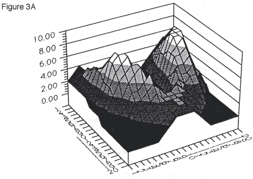 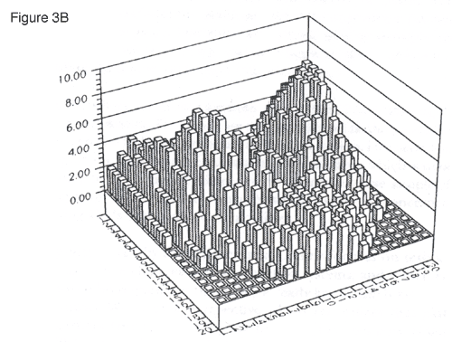 Figure 3 is based on a standard spreadsheet (WINGZ) in which the value in each cell is based on either data taken from some external source or rules based on variables involving values from other cells. This means that neighborhoods of the map inform one another as well are being informed by external data sources such as tests or instructional activities. To serve as a simple learning progress map, the spreadsheet underlying Figure 3B needs one additional feature. That feature is a set of meta-rules to govern how and how often information is changed by the operation of the spreadsheet-level rules. Both the spreadsheet-level rules and the meta-rules must be based on (i) theory-based models describing relationships among understandings represented in various neighborhoods of the map, and (ii) empirical information based on the experiences of individual students (for example, when a given student's problem-solving experiences forge links between logically distant conceptual neighborhoods). Such off-the shelf meta-rule systems already exist for graphics-based spreadsheets (for example, Axcelis's EVOLVER, 1990), so the programming underlying our learning progress maps can be thought of as involving simply a vector-valued spreadsheet with meta-rules, and with vector valued links to a library of problems and instructional activities. The key difficulties do not have to do with programming; they have to do with finding appropriate ways to define the vector valued rules. Defining vector-valued rules Four important considerations have influenced the design of our learning progress maps:
In the next section, we describe several reasons why it is especially important to use computer-based reports that are interactive, inquiry-oriented, and decision-focused. USING INTERACTIVE DECISION-FOCUSED REPORTS Frederiksen and Collins describe a systemically valid test (or item, or report) as one that "induces in the education system curricular and instructional changes that foster the development of the cognitive traits that the test is designed to measure. Evidence for systemic validity would be an improvement in those traits after the test had been in place within the educational system for a period of time" (1989). Negative influences of standardized testing have been thoroughly documented in mathematics. Therefore, we are sympathetic to the pro-active policy of Frederiksen and Collins stated at the start of this section. Furthermore, we strongly support the performance assessment movement in which school systems are refusing to use tests that do not involve a representative sample of material that they really want students to learn. Nevertheless, we are concerned about the following kinds of misuses of such policies. The policy stated by Frederiksen and Collins focuses on tests as leverage points to induce changes in our education systems; and it further suggests that those who implement the policy already know which kinds of changes are positive. We favor a perspective which recognizes that past curriculum reformers (such as those in the new math movements of the 1960s and 1970s) often tried to induce changes in directions that, in retrospect, proved to be at least partly wrong-minded. Whereas reform-minded educators often support policies that remove decision making from the hands of local educators, we prefer to focus on policies that empower local educators, while doing our best to ensure that their decisions are well informed concerning relevant conditions, available options, and probable results. Our position is that tem and reports should be used to inform-not preclude-educational decision making. Using test results as leverage points to clarify objectives and induce curriculum changes focuses on one set of priority decision-making issues but other issues should not be neglected. For example, a fundamental shortcoming of many curriculum reform movements is their focus on radical change while ignoring the difficult tasks that deal with orderly and evolutionary steps to get from "where we are" to "where we want to be." Suppose it were possible to instantly change all college admissions tests to conform to the kinds of future-oriented goals cited in recent publications from the National Council of Teachers of Mathematics (NCTM), Mathematical Sciences Education Board (MSEB), American Association for the Advancement of Science (AAAS), and National Science Teachers Association (NSTA). Care must still be taken to ensure fair treatment for students who were indoctrinated through twelve years in an old system that emphasized obsolete views of basic facts and skills (Ford Foundation, 1986; Malcom, 1984). Our position is that it is not acceptable for testing programs to use students as pawns to induce curriculum changes, especially if the students most likely to suffer are those that have been treated unjustly by the system we are trying to change. Because their rhetoric is often aimed at rallying political action, curriculum reformers who argue in favor of one point often implicitly suggest that other points should be ignored. For example, because teacher decision making should be a priority, it does not follow that the information needs of other decision makers should be ignored. Because performance assessment items and students' project portfolios should be given greater attention, it does not follow that other sources of information should be ignored. We take the position that no single decision maker or decision-making issue should blind us to all others, and no single source of information is likely to be appropriate for all purposes and audiences. One of the worst things that could happen to promising new forms of assessment is that they too become used for issues and audiences that they were not intended to address. Decision-specific Appropriateness of Reports To describe the main kinds of issues that must be taken into, account so that appropriate capabilities can be incorporated into our learning progress maps, it is useful to focus on teacher decision-making. For example, consider the following ways in which maps might help inform teacher decision-making.
Two important observations about the preceding kinds of decisions are that none can be neglected, and that the data sources and report characteristics relevant for one issue are not necessarily appropriate for others. For example, a test that diagnoses learning difficulties for individual students maybe inappropriate if the goal is to prove that a large and complex program works. Or if appropriate instructional activities are needed for a given student, then fast turn-around may be far more important than high precision or high reliability because negative consequences are not associated with errors. Yet for tests that focus on gate-keeping functions, decisions to screen students out of short-term opportunities can result in permanently limiting future educational choices. In this later case, errors may lead to enormous human losses. The main point of these observations is that useful and instruction-relevant learning progress maps must be designed to reflect information from a variety of sources, including teachers' classroom observations, students' project portfolios, and performance assessment tests focusing on realistic types of problem solving. Our maps are also being designed to emphasize the strengths and needs of individual students, based on capabilities that we know can be changed through instruction, and to emphasize positive planning and optimizing functions aimed at ensuring maximum success (Shavelson, 1991). Reports that do not help students are not the kind we are interested in making available. Therefore, our learning progress maps are designed to emphasize a form of assessment that gives students lots of opportunities to demonstrate their knowledge and capabilities through sampling over long periods of time and a variety of areas that explicitly fit students' individual interests and experience. In this way, records are not as easily influenced by factors such as cheating, sickness, or disinterest, and issues related to validity, reliability, and generalize ability are addressed in the most straightforward ways possible (Gardner, 1991; Shavelson, 1989). I SUMMARY Assessment report. The computer-based learning progress maps described in this chapter are graphic, dynamic, interactive, intelligent, decision-focused reports designed to produce n-dimensional student profiles that are linked in meaningful ways to future-oriented objectives frameworks, such as the NCTM's 1989 Curriculum and Evaluation Standards for School Mathematics. They are capable of reporting assessment-relevant information from many types of data sources; and, their primary aims are to I identify strengths and weaknesses of individual students for the purpose of optimizing educational opportunities. REFERENCES Alexander, L, and James, H.T. (1987). The nation's report card: Improving the assessment of student achievement. Washington, DC: National Academy of Education. American Association for the Advancement of Science. (1989). Project 2061: Science for all Americans. Washington, DC: AAAS. American Council on Education. (1988). One third of a nation. Report of the Commission l on Minority Participation in Education and American life. Washington, DC: ACE. 5 Archibald, D.A., and Newman, F.M. (1988). Beyond standardized testing: Assessing authentic academic achievement in the secondary school. Reston, VA: National Association of Secondary School Principals. Axcelis, (1990). EVOLVER. (Computer Program). Axcelis Corp., Seattle, WE 98101. Bloom, B.S. (1956). Taxonomy of educational objectives: The classification of education goals, Handbook 1: Cognitive domain. New York: Longmans, Green and Co. Bloom, B.S. (1985). The development of talent in young people. New York: Balentine. Blumberg, F., Epstein, M., MacDonald, W., and Mullis, I. (1986). A pilot study of higher-order thinking skills assessment techniques in science and mathematics. < Princeton, NJ: National Assessment of Educational Progress. Bridger, M. (1988). Looking at the Mandelbrot Set. The College Mathematics Journal, 19(4), 353-363. Brown, J.S., and VanLehn, K. (1980). Repair theory: A generative theory o bugs in procedural skills, Cognitive Science, 4, 379-426. Bruner, J. (1973). Beyond the information given. J. Anglin (Ed.). New York: Norton and Co. Burstall, C. (1986). Alternative forms of assessment: A United Kingdom perspective. Educational Measurement: Issues and Practice, 5(1), 17-22. Business Week, Human capital: The decline of America's work force,. Special Report, September 19, 1988, 100-141. Carpenter, T.P., Corbitt, M.K, Kepner, H. S., Jr., Lindquist, M. M., and Reys, R.BV. (1981). Results from the second mathematics assessment of the national assessment of educational progress. Reston, VA: National Council of Teachers of Mathematics. Carpenter, T.P., Moser, J., and Romberg, T.A. (Eds). (1982). Addition and subtraction: A cognitive perspective. Hillsdale, NJ: Lawrence Erlbaum Associates. Center for the Assessment of Educational Progress, Educational Testing Service, (1987). The subtle danger: Reflections on the literacy abilities of America's young adults. Princeton, NJ: Educational Testing Service. Clarke, D. (1998). Assessment alternatives in mathematics: Mathematics curriculum and teaching programs. Canberra: Curriculum Development Center. Clement, J. (1982). Student's preconceptions in introductory mechanics, American Journal of Physics, 50, 66-71. Cole, J., and Griffen, P. (Eds,) (1987). Contextual factors in education: Improving science and math education for minorities and women. Madison, WI: Wisconsin Center for Educational Research., Collis, K.F., and Romberg, T.A. (1989). Assessment of mathematical performance: An analysis of open-ended test items. National Center for Research in Mathematical Sciences Education, Wisconsin Center for Education Research, School of Education, Madison, WI: University of Wisconsin. Conference Board of the Mathematical Sciences. (1983). The mathematical sciences curriculum K-12: What is sill fundamental and what is not. In Educating Americans for the 21st century: Source materials. National Science Board Commission on Precollege Education in Mathematics, Science, and Technology. Washington, DC: National Science Foundation 1-23. Confrey, J. (1990, April). Origins, units, and rates: The construction of a splitting structure. A paper presented at the annual meeting of the American Educational Research Association. Boston. Council of Chief State School Officers. (1988). Assessing mathematics in 1990 by the National Assessment of Educational Progress. Washington DC: State Education Assessment Center. Council of Chief State Schoo1 Officers. (1987). Equity and excellence: A dual thrust in mathematics and science education; Model state education agency efforts. Washington, DC: Council of Chief State School Officers. de Kleer, J., and Brown, J.S. (1983). Assumptions and ambiguities in mechanistic mental models. In D. Gentner and A.L. Stevens (Eds), Mental models, Hillsdale, NJ: Lawrence Erlbaum Associates. de Lange, J. (1987). Mathematics, insight and meaning: Teaching, learning and testing of mathematics for the life and social sciences, (dissertation). Utrecht, Netherlands: Rijksuniversiteit Utrecht. Denham, W.F., and O'Malley, E.T. (Eds.). (1985). Mathematics framework for California public schools, kindergarten through grade twelve. Sacramento, CA: California State Department of Education. De Soete, G. (1986). A perceptual study of the Flury-Riedwyl faces for graphically displaying multivariate data. Int. J. Man-Machine Studies, 25 (1986). 549-555. London: Academic Press. di Sessa, A. (1982, January-March). Unlearning Aristotelian physics: A study of knowledge-based learning. Cognitive Science, 6(1), 37-75. di Sessa, A. (1989). Knowledge in pieces, In G. Gorman and P. Pufall (Eds.) Constructivism in the computer age. Hillsdale, NJ: Lawrence Erlbaum Associates. Dienes, Z. (1960). Building up mathematics. London: Hutchinson Ltd. Donlon, T.F. (Ed.). (1984a). The College Board technical handbook for the Scholastix Aptitude Test and Achievement Tests. New York: College Entrance Examination Board. Dossey, J.A., Mullis, I.V.S., Lindquist, M.M., and Chambers, D.L. (1988). The mathematics report card: Are we measuring up? Princeton, NJ: Educational Testing Service. Edgerton, H A. (1985). Identifying high schools seniors talented in science. Westinghouse Science Talent Search. Washington, DC: Science Service. Flury, B. (1980). Construction of an asymmetrical face to represent multivariate data graphically. Technical Report No. 3, University of Berne, Department of Statistics. Flury, B., and Riedwyl, H. (1981, December). Graphical representation of multivariate data by means of asymmetrical faces. Journal of the American Statistical Association, 76(376), Applications Section. Ford Foundation. (1986). Minorities and mathematics. New York: Ford Foundation. Frederiksen, J.R., and Collins, A. (1989). A systems approach to educational testing. Educational Researcher, 18, 27-32 Frederiksen, N., Mislevy, R.J., and Bejar, I.I., (Eds). (1992). Test theory for a new generation of tests. Hillsdale, NJ: Lawrence Erlbaum Associates. Fuson, K.C. (1988). Children's counting an concepts of number. New York: Springer-Verlag. Gagne, R. (1985). The conditions of learning and theory of instruction (4th ed.). New York: Holt, Rinehart and Winston. Gardner, H. (1985). Frames of mind: The theory of multiple intelligences. New York: Basic Books. Gardner, H. (1991). Assessment in context: The alternative to standardized testing. In B.R> Gifford and M.C. O'Connor (Eds.), Future assessments: Changing views of aptitude, achievement, and instruction. Boston, MA: Kluwer Academic Publishers. Greeno, J. (1988a). The situated activities of learning and knowing mathematics. In M. Behr, C. Lacampagne and M. Wheeler (Eds.), Proceedings of the tenth annual meeting of the Psychology of Mathematics Education. DeKalb, Illinois. Greeno, J.G. (1988b). For the study of mathematical epistemology. In R. Charles and E. Silver (Eds.) Research agenda for mathematics education: Teaching and assessing mathematical problem solving. Reston, VA: National Council of Teachers of Mathematics. Hiebert, J., and Behr, M. (Eds.). (1988). Number concepts and operations in the middle grades, 2. Reston, VA: National Council of Teachers of Mathematics. Holland, J. L., and Richards, J.M., Jr. (1965). Academic and nonacademic accomplishment: Correlated or uncorrelated? Journal of Education Psychology, 56,165-174. Howson, G., and Wilson, B. (Eds.). (1986). School mathematics in the 1990's. International Commission of Mathematical Instruction Study Series. Cambridge: Cambridge University Press. Howson, G., Kahane, J.P., Lauginie, P., and de Turckheim, E. (1988). Mathematics as a service subject. International Commission of Mathematical Instruction Study Series. Cambridge: Cambridge University Press. Hoyt, D.P. (1966, Winter). College grades and adult accomplishment: A review of research. The Educational Record, 47 (1). Hunt, E. (1986). Cognitive research and future test design. In The redesign of testing for the 21st century. Princeton, NJ: Educational Testing Service. Kaput, J. (1989). Linking representations in the symbol system of algebra. In C. Kieren and S. Wagner (Eds), A research agenda for the Learning and teaching of algebra. Reston, VA: National Council of Teachers of Mathematics. Kellaghan, T., Madaus, C.F., and Airasian, P.W. (1980). The effects of standardized testing. Dublin, Ireland/Boston, MA: St. Patrick's College/Boston College. Kieren, T.E. (1988). Personal knowledge of rational numbers: Its intuitive and formal development. In J. Hiebert and M. Behr (Eds.), Number concepts and operations in the middle grades, 2. Reston, VA: The National Council of Teachers of Mathematics; pp. 162?181. Kirsch, I.S. (1987, September 28). Measuring adult literacy. Paper prepared for the symposium Towards Defining Literacy, sponsored by the National Advisory Council on Adult Education and held at the Literacy Research Center, University of Pennsylvania. Kirsch, I. S., and Jungeblut, A. (1986). Literacy profiles of America's young adults. Princeton, NJ: Educational Testing Service. Kruteskii, V. (1976). The psychology of mathematical abilities in school children. Chicago: University of Chicago Press. Kulm, G. (1990). Assessing higher-order thinking in mathematics. Washington, DC: American Association for the Advancement of Science. Lamon, S.J. (1992). Ratio and proportion: A framework for connecting content and children's thinking. Journal for Research in Mathematics Education, 23(5). Lapointe, A.E., Mead, N.A., and Phillips, C.W. (1989). A world of differences: An international assessment of science and mathematics. Princeton, NJ: Educational Testing Service. Leinhardt, C., and Seewald, A M. (1981). Overlap: What's tested, what's taught? Journal of Educational Measure, 18(2), 85-96. Lesh, R. (1990). Computer-based assessment of higher-order understandings and processes in elementary mathematics. In G. Kulm (Ed.), Assessing higher-order thinking in mathematics. Washington, DC: American Association for the advancement of Sciences. Lesh, R, and Kelly, (1990). A modeling theory of computer-based tutoring. In J.M. Laborde (Ed.) Modeling student knowledge in geometry. IMAC: Grenoble, France. Lesh, R, and Lamon, SJ. (in press). Assessments of authentic performance. Princeton, NJ: Educational Testing Service. Lesh, R, Post, T., and Behr, M. (1988). Proportional reasoning. In J. Hiebert and U. Behr (Eds), Number concepts and operations in the middle grades, 2. Reston, VA The National Council of Teachers of Mathematics; pp. 9~1 18. Malcom, S.M. (1984). Equity and excellence: Compatible goals. Washington, DC: American Association for the Advancement of Science. Mathematical Sciences Education Board. ( 1990). Reshaping school mathematics: A philosophy and framework for curriculum. National Research Council. Washington, DC: National Academy Press. McDonald, C.C., and Ayers, JA (1978). Some applications of Chernoff faces. In P.C.C. Wang (Ed.), Graphical representation of multivariate data. New York: Academic Press. McKnight, CC., Crosswhite, FJ., Dossey, JA, Kifer, E., Swafford, J.O., Travers K.J., and Cooney, TJ. (1987). The underachieving curriculum: Assessing U.S. school mathematics from an international perspective. Champaign, IL: Stipes Publishing Co. Mestre, J. (1987). Why should mathematics and science teachers be interested in cognitive research findings? Academic Connections, The College Board, 3-5, 8?11. Minstrell, J. (1982). Conceptual development research in the natural setting of a secondary school science classroom. In M.B. Rowe (Ed.), Education for the 80's: Science. Washington, DC: National Education Association. Mislevy, RJ. (1992). Foundations of a new test theory. In N. Frederiksen, R.J. Mislevy, and I.I. Behar (Eds.), Test theory for a new generation of tests. Hillsdale, NJ: Lawrence Erlbaum associates. Mosenthal, P., and Kirsch, l. (1989). Understanding documents. Journal of Reading. October 1989; pp.58-60. Mosenthal, P., and Kirsch, I. (1990). Megatends 2000: Ten new directions for the 1990's. October 1989; pp. 5-60. National Assessment of Educational Progress. (1981). Mathematic objectives: 1981-82 assessment, No. l3-MA?10). Princeton, NJ: Educational Testing Service. National Council of Teachers of Mathematics. (1989). Curriculum and evaluation standards for school mathematics. Reston, VA: NCTM. National Research Council. (1990). Renewing U.S. mathematics: A plan for the 1990's. Executive Summary: Committee on the Mathematical Sciences: Status and Future Directions, Board on Mathematical Sciences, Commission on Physical Sciences, Mathematics, and Applications. Washington, DC: National Academy Press. National Science Foundation. (1988). Women and minorities in science and engineering. Washington, DC: National Science Foundation. National Science Teachers Association. (1990). Essential Changes in Secondary School Science: Scope, sequence, and coordination. Washington, DC: NSTA. Pandey, T. (1990). Power items and the alignment of curriculum and assessment. In C. Kulm (Ed.), Assessing higher-order thinking in mathematics. Washington, DC: American Association for the Advancement of Science. Piaget, J., and Beth, E. (1966). Mathematical epistemology and psychology. Dordrecht, Netherlands: D. Reidel. Pollak, H. (1987). Notes from a talk given at the Mathematical Sciences Education Board. Frameworks Conference, May 1987, at Minneapolis, MN. Popham, WJ. (1987). The merits of measurement driven instruction. Phi Delta Kappan, 68(9), 679-682. Post, T. (1987). Teaching mathematics in grades K-8. Boston: Allyn and Bacon. Post, T., Behr, M., Lesh, R., and Harel, C. (1990). Research and development in middle school mathematics. (NSF Grant No. MDR?8955346). Washington, DC: National Science Foundation. Publix Information. (1991, Summer). Syllabus (17). Sunnyvale, CA. Resnick, D.P., and Resnick, LB. (1991). Varieties of literacy. In A.E. Barnes and P.N. Stearnes (Eds), Social history and issues in human consciousness: Interdisciplinary connections. New York: New York University Press. Resnick, L.B. (1987a). Education and learning to think. Washington, DC: National Academy Press. Resnick, L.B. (1987b). Learning in school and out. Educational Researcher, 16(9), 13-20. Resnick, LB. (1989). Tests as standards of achievement in schools. Learning Research and Development Center. Pittsburgh, PA: University of Pittsburgh. Resnick, LB., and Resnick, D.P. (1989). Assessing the thinking curriculum New tools for educational reform. In B.R. Gifford and M.C O'Connor (Eds.), Future assessments: Changing views of aptitude, achievement and instruction. Boston: Kluwer Academic Publishers. Romberg, T.A., Zarinnia, E.A., and Williams, S. (1989). The influence of mandated testing on mathematics instruction: Grade 8 teachers' perceptions. Madison, WI: University of Wisconsin?Madison, National Center for Research in Mathematical Science Education. Romberg, TA., Zarinnia, ES., and Collis, KF. (1990). A new worldview of assessment of mathematics. In C. Kuhn (Ed.), Assessing higher order thinking in mathematics. Washington, DC: American Association for the Advancement of Science. Schank, R (1991). Tell me a story: A new look at real and artificial memory. New York: Schribner. Schoenfeld, A. (1985). Mathematical problem solving. New York: Academic Press. Shavelson, R.J. (1989, June). Performance assessment: Technical considerations. Presentation at the seminar on Authentic Assessment, Berkeley, CA. Shavelson, R.J. (1991). Can indicator systems improve the effectiveness of mathematics and science education? The case of the US. Evaluation and Research in Education. In C.T. Fitz-Gibbon (Ed.), Evaluation and Research in Education. Vol.4(2); pp. 51-50. Shavelson, R.J., Carey, N.B., and Webb, N.M. (1990, May). Indicators of science achievement: Options for a powerful policy instrument. Phi Delta Kappan 8, 692-697. Shavelson, R.J., Baxter, G.P., Pine, J., Yure, J., Goldman, S.R., and Smith, B. (1991). Alternative Technologies for Large Scale Instruments of Education Reform. School Effectiveness & School Improvement and International Journal of Education Policy and Policies. Vol. 4(2); pp. 51-60. Steen, LA. (1981). Mathematics tomorrow. New York: Springer?Verlag; pp. 75-82. Steen, LA. (1986). A time of transition: Mathematics for the middle grades. In R. Lodholz (Ed.), A change in emphasis. Parkway, MO: Parkway School District, 1986, 1-9. Steen, LA. (1987, July). Mathematics education: A predictor of scientific competitiveness. Science, 237, 251-252, 302. Steen, LA. (1988, April). The science of patterns. Science, 240, 611-616. Steen, L A. (Ed.). (1988a). Calculus for a new century: A pump, not a filter. Washington, DC: Mathematical Association of America. Steen, LA. (1990). On the shoulders of giants: New approaches to numeracy. National Research Council. Washington, DC: National Academy Press. Steffe, LP. (1988). Children's construction of number sequences and multiplying schemes. In J. Hiebert and M. Behr (Eds.), Number concepts and operations in the middle grades, 2, 119-140. Reston, VA: The National Council of Teachers of Mathematics. Steffe, L P., Cobb, P., and von Glasersfeld, E. (1988). Construction of arithmetical meanings and strategies. New York: Springer-Verlag. Stenmark, J.K. (1989). Assessment alternatives in mathematics: An overview of assessment of techniques that promote learning. EQUALS staff of the Assessment committee of the California Mathematics Council Campaign for Mathematics. Berkeley, CA: Lawrence Hall of Science, University of California. Tall, D. (1992). The transition to advanced mathematical thinking: Functions, limits, infinity, and proof. In D. Grouws (Ed.), Handbook of research on mathematics teaching and learning. New York: Macmillan. Tatsuoka, K. (1990). Boolean algebra applied to determination of universal set of knowledge states. ETS Technical Report ONR-3. Princeton, NJ: Educational Testing Service. Thompson, P. (1990). A theoretical model of quantity?based reasoning in arithmetic and algebra. Paper presented at the annual meeting of AERA, San Francisco, CA. Available from author, San Diego State University, Department of Mathematics. Turner, N., and Rains, D. (1986). Careers of Mathematically talented students: A 27-year study of top-rankers in the 1958-1960 AHSME. U.S. School Mathematics from an International Perspective. Champaign, IL: Stipes Publishing Co. van Hiele, P.M. (1959, June). La pens'ee de l'enfant it la geometrie. Bulletin de l'Association des Professeurs Mathematiques de l'Ensignement Public 6. Vergnaud, C. (1988). Multiplicative structures. In R. Lesh; and M. Landau (Eds.), Acquisition of mathematics concepts and processes. Orlando, FL Academic Press; pp. 127-174. Vygotsky, L (1978). Mind in society: The development of the higher psychological processes. Cambridge, MA: Harvard University Press. Wagner, S., and Kieran, C (Eds.). (1989). Research issues in the learning and teaching of algebra. Reston, VA: National Council of Teachers of Mathematics. Wallace. M.A., and Wing, C.W. (1969). The talented student. New York: Holt, Rinehart and Winston. j Willingham, W.W., Lewis, C., Morgan, R., and Ramist, L (1990). Predicting college grades: An analysis of instructional trends over two decades. Princeton, NJ: Educational Testing Service. APPENDIX: SOME SIMPLE IMAGE PROCESSING TECHNIQUES The following example uses fractal geometry to show some of the mediate steps in the progressive transformation of one image to another (Bridger, 1988). For those who are uninitiated to the world of visualization, it provides a brief introduction to simple image processing techniques and a demonstration of the power of image processing to change perspective on things. The Mandelbrot Set is defined in terms of a sequence whose values for each complex number Q stay inside a circle of radius R=2. Color may be assigned to each point Q in the complex plane in such a way that Color (Q) = 0 if Q is in the Mandelbrot Set, or else a color is assigned to the first index N for which a term of the sequence ZN goes outside the circle. If the computer plots a grid of points in the complex plane, each of which is assigned a color, a high resolution monitor capable of displaying hundreds of colors, produces a picture of rare beauty. Since colors are not available here, Figure A-l shows the Mandelbrot Set on a grid in the complex plane with the color black assigned to points in the set and white to all other points. 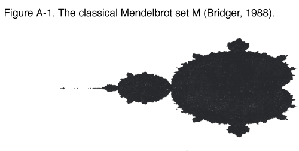 When colors are not available, another option is to graph the set in 3-space by letting the index N represent a height above the complex plane, instead of a color. The result is shown in Figure A-2. . 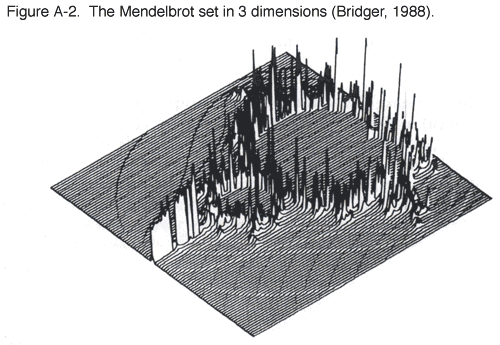 Next, a filtering technique may be used to smooth the spiky nature of the image. In this case, the weighted average of eight points near a given point (with the closer points having the greater weight), was used to determine the height at each point. This smoothing process may be applied as many times as desired. Figures A-3, A4, and A-5 show the results of applying one smoothing, three smoothings, and six smoothings, respectively. 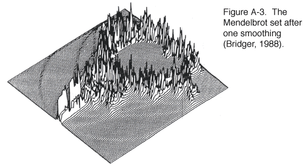 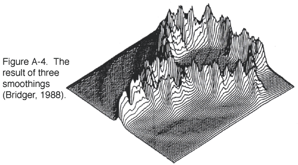 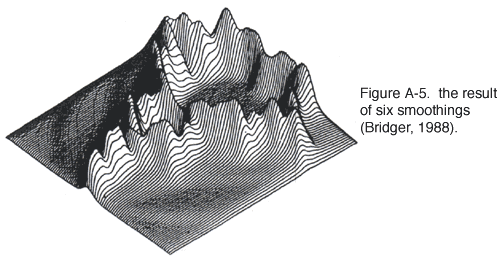 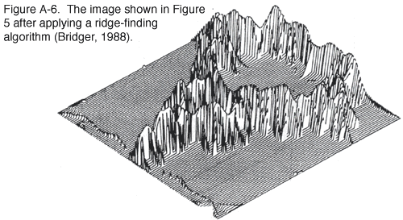 Since averaging tends to blur the basic shape of the mountain, showing only its well-weathered main ridge, to recover more of its basic shape, an algorithm is applied to detect and accentuate ridges oriented in various directions. Figure A-6 shows the image after applying a ridge-finding algorithm in four directions. In this example, a few simple image processing techniques dramatically changed the image of the original black-and-white set of points, and made available information that was not included in the original image. For example, we gained a sense about how long it takes to eliminate a point from the Mandelbrot Set. And today's visualization tools are far more powerful than this example shows! They can be used to
produce reports that are (i) graphics-based to clarify trends and other
patterns beneath the surface of things, (ii) interactive to respond to
on-site user inquiries, (iii) intelligent to filter, simplify, organize,
and interpret information in a form that is especially relevant to local
conditions and to particular decision-making issues, and (iv) multidimensional
to integrate information from a variety of data sources, and to produce
vector-valued interpretations (or n-dimensional graphics-based interpretations
for situations that do not lend themselves to simple numeric quantification
). (top) |
||||||